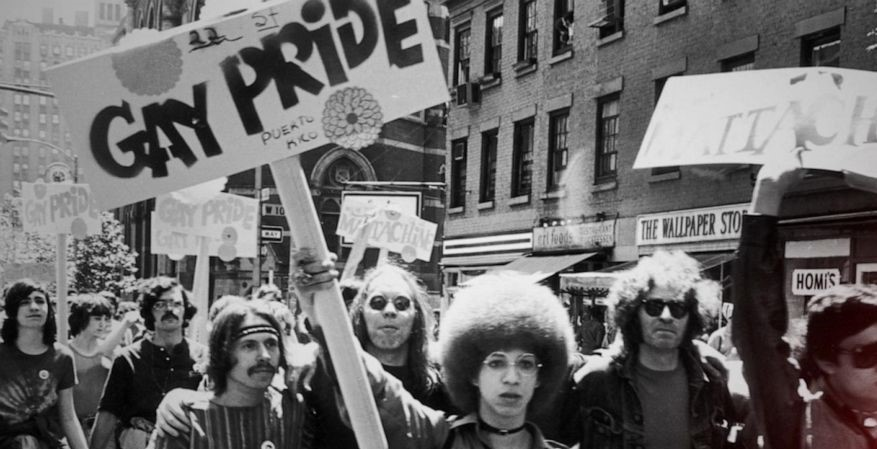

Gay pride or LGBT pride is the positive stance against discrimination and violence toward lesbian, gay, bisexual, and transgender (LGBT) people to promote their self-affirmation, dignity, equality rights, increase their visibility as a social group, build community, and celebrate sexual diversity and gender variance.
Lesbian, Gay, Bisexual, Transgender, and Queer (LGBTQ) Pride Month is currently celebrated each year in the month of June to honor the 1969 Stonewall Uprising in Manhattan.Memorials are held during this month for those members of the community who have been lost to hate crimes or HIV/AIDS.
During 1969, homosexuality was still considered a crime, so men were arrested for dressing in "drag" and women were arrested if they had less than three pieces of "feminine clothing" on. June 28, 1969 at a bar, Stonewall Inn a well known gay bar and went to make arrests, but instead of the patreons waiting to get arrsted they fought back and rioted effectively sending a message of their frustrations to the government. That's why this month is known as Pride Month.
